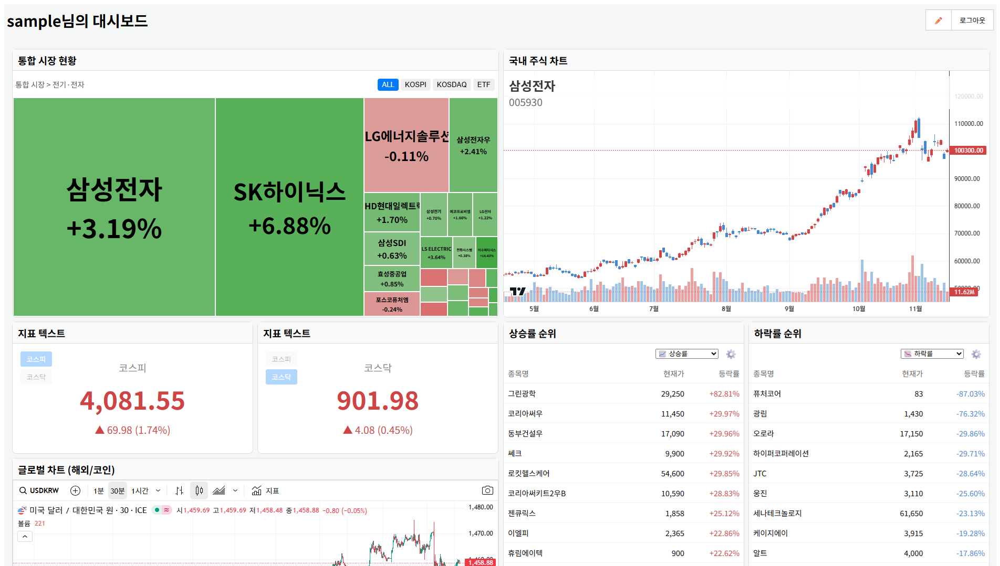

📈 개인화 주식 대시보드: '오늘의 국장'

데이터 수집과 서비스 서빙을 분리 설계하고, 전 과정을 Azure 클라우드에서 운영 중입니다. 위젯 추가/제거, 드래그앤드롭 레이아웃, 설정 저장 등 다양한 커스터마이징을 구현했습니다.
Azure
Spring Boot
React
Python
SQL Server
D3.js
(가입 없이 샘플 계정으로 즉시 테스트 가능합니다.)